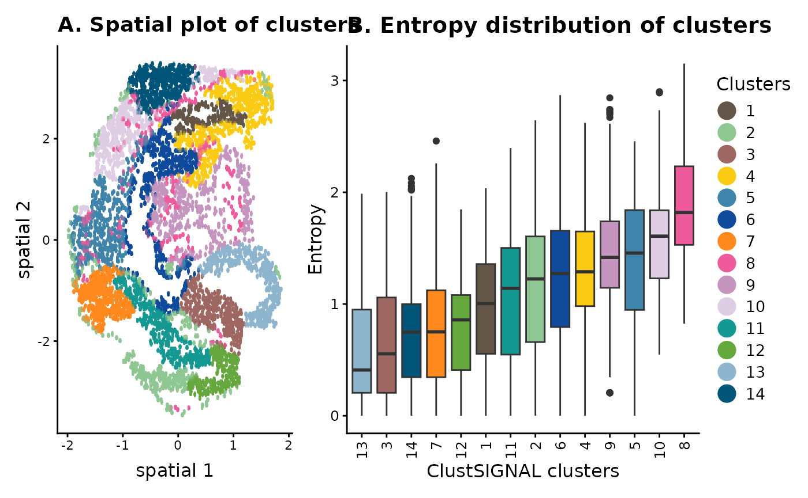
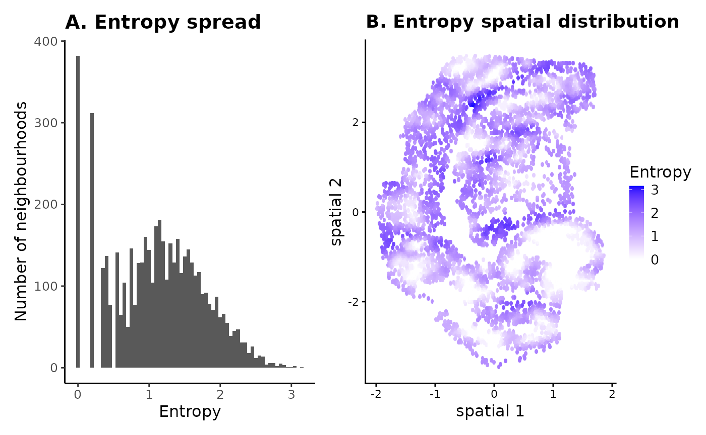
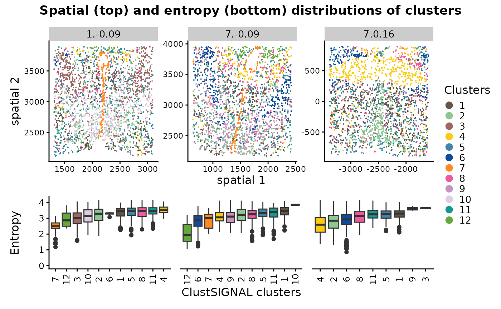
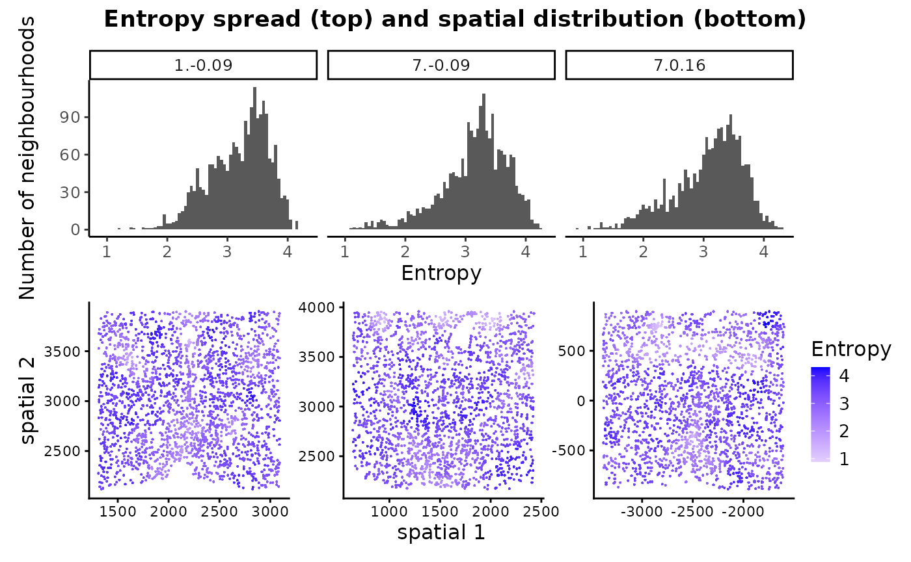

ClustSIGNAL tutorial
Pratibha Panwar, Boyi Guo, Haowen Zhou, Stephanie Hicks, Shila Ghazanfar
2025-03-21
Source:vignettes/clustSIGNAL.Rmd
clustSIGNAL.RmdOverview
In this vignette, we demonstrate how spatially-resolved clustering can be performed with ClustSIGNAL, exploring the clusters using pre-defined metrics like adjusted rand index (ARI) and normalized mutual information (NMI), as well as spatial plots to visualize the clusters. ClustSIGNAL is a multisample spatial clustering approach, and we show this using an example dataset. We also display the use of entropy measures, which are generated as a by-product of the ClustSIGNAL process, in understanding the tissue structure of a sample.
ClustSIGNAL is very flexible in that it allows for, (i) user-provided input values for most parameters (default parameter values are also provided) and (ii) running ClustSIGNAL step-by-step. This tutorial demonstrates how the step-by-step clustering can be performed, and what parameters need to be defined at each step.
Single sample analysis with ClustSIGNAL
In this section, we use the SeqFISH mouse embryo dataset from Lohoff et al, 2021, which contains spatial transcriptomics data from 3 mouse embryos, with 351 genes and 57,536 cells. For this vignette, we have subset the data by randomly selecting 5000 cells from Embryo 2, excluding cells that had been manually annotated as ‘Low quality’.
We begin by creating a SpatialExperiment object from the gene expression and cell information in the data subset, ensuring that the spatial coordinates are stored in spatialCoords within the SpatialExperiment object. If the data are already in a SpatialExperiment object, ClustSIGNAL can be run as long as basic requirements like spatial coordinates, normalized counts, and unique cell names are met.
# load me_expr containing gene expression logcounts
# load me_data containing cell metadata including x-y coordinates
data(mEmbryo2)
# to create a SpatialExperiment object we need gene expression, cell metadata,
# and cell locations.
spe <- SpatialExperiment::SpatialExperiment(
assays = list(logcounts = me_expr),
colData = me_data,
# spatialCoordsNames requires column names in me_data that contain
# xy-coordinates of cells
spatialCoordsNames = c("X", "Y"))
spe## class: SpatialExperiment
## dim: 351 5000
## metadata(0):
## assays(1): logcounts
## rownames(351): Abcc4 Acp5 ... Zfp57 Zic3
## rowData names(0):
## colnames(5000): embryo2_Pos29_cell100_z2 embryo2_Pos29_cell101_z5 ...
## embryo2_Pos50_cell97_z5 embryo2_Pos50_cell99_z5
## colData names(4): uniqueID pos celltype_mapped_refined sample_id
## reducedDimNames(0):
## mainExpName: NULL
## altExpNames(0):
## spatialCoords names(2) : X Y
## imgData names(0):For running ClustSIGNAL, we need to know the column name in colData slot of the SpatialExperiment object that contains the sample labels. Here, the sample labels are in the ‘sample_id’ column.
spe |> colData() |> colnames() # column names in the metadata## [1] "uniqueID" "pos"
## [3] "celltype_mapped_refined" "sample_id"Running ClustSIGNAL on one sample
The simplest ClustSIGNAL run requires a SpatialExperiment object, the colData column name of sample labels, and the type of output to generate.
Other parameters that can be modified include: (i) dimRed - specifies the low dimension data to use (default ‘None’); (ii) batch - when TRUE, ClustSIGNAL performs batch correction and needs a valid value for batch_by; (iii) batch_by - name of metadata column containing sample batches contributing to batch effect (default ‘None’); (iv) NN - specifies the neighbourhood size (default 30); (v) kernel - specifies the distribution to use for weight generation (default ‘G’ for Gaussian); (vi) spread - the distribution spread value (default 0.3 for Gaussian); (vii) sort - when TRUE, ClustSIGNAL sorts the neighbourhood; (viii) threads - specifies the number of cpus to use in parallel runs (default 1); and (ix) clustParams - list of parameters to use for non-spatial clustering components.
Furthermore, the adaptively smoothed gene expression data generated by ClustSIGNAL could be useful for other downstream analyses and is accessible if the output options ‘s’ or ‘a’ are selected to return the final SpatialExperiment object.
set.seed(100)
samples <- "sample_id" # column name containing sample names
# to run ClustSIGNAL, requires a SpatialExperiment object, column name of sample
# labels in colData slot, and the output type to generate (clusters, neighbours,
# and/or final spe object).
res_emb <- clustSIGNAL(spe, samples, outputs = "a") ## [1] "Calculating PCA. Time 06:35:36"
## [1] "ClustSIGNAL run started. Time 06:35:37"
## [1] "Initial nonspatial clustering performed. Clusters = 9 Time 06:35:38"
## [1] "Nonspatial subclustering performed. Subclusters = 31 Time 06:35:40"
## [1] "Regions defined. Time 06:35:42"
## [1] "Region heterogeneity calculated. Time 06:35:42"
## [1] "Smoothing performed. NN = 30 Kernel = G Spread = 0.3 Time 06:35:42"
## [1] "Nonspatial clustering performed on smoothed data. Clusters = 14 Time 06:35:44"
## [1] "ClustSIGNAL run completed. 06:35:44"
## Time difference of 7.587263 secsThis returns a list that contains a ClustSIGNAL clusters dataframe (clusters), a matrix of cell IDs from each cell’s neighbourhood (neighbours with NN neighbourhood size), and a final SpatialExperiment object (spe_final).
res_emb |> names() # names of the outputs generated## [1] "clusters" "neighbours" "spe_final"The cluster dataframe contains cell IDs and their cluster labels assigned by ClustSIGNAL.
res_emb$clusters |> head() # cluster data frame has cell IDs and cluster labels## Cells Clusters
## 1 embryo2_Pos29_cell100_z2 12
## 2 embryo2_Pos29_cell101_z5 12
## 3 embryo2_Pos29_cell104_z2 12
## 4 embryo2_Pos29_cell104_z5 12
## 5 embryo2_Pos29_cell105_z2 12
## 6 embryo2_Pos29_cell108_z5 12The output SpatialExperiment object contains the adaptively smoothed gene expression data as an additional assay (smoothed), as well as initial clusters and subclusters, entropy values, and ClustSIGNAL clusters.
# for convenience with downstream analyses, we will replace the original spe
# object with the one generated by ClustSIGNAL. This does not lead to any loss
# of information as ClustSIGNAL only adds information to the input spe object.
spe <- res_emb$spe_final
spe## class: SpatialExperiment
## dim: 351 5000
## metadata(0):
## assays(2): logcounts smoothed
## rownames(351): Abcc4 Acp5 ... Zfp57 Zic3
## rowData names(0):
## colnames(5000): embryo2_Pos29_cell100_z2 embryo2_Pos29_cell101_z5 ...
## embryo2_Pos50_cell97_z5 embryo2_Pos50_cell99_z5
## colData names(8): uniqueID pos ... entropy ClustSIGNAL
## reducedDimNames(2): PCA PCA.smooth
## mainExpName: NULL
## altExpNames(0):
## spatialCoords names(2) : X Y
## imgData names(1): sample_id
spe |> colData() |> colnames()## [1] "uniqueID" "pos"
## [3] "celltype_mapped_refined" "sample_id"
## [5] "initCluster" "initSubcluster"
## [7] "entropy" "ClustSIGNAL"Visualising ClustSIGNAL clusters
We use spatial coordinates of cells and their ClustSIGNAL cluster labels and entropy values to visualize the clustering output.
colors <- c("#635547", "#8EC792", "#9e6762", "#FACB12", "#3F84AA", "#0F4A9C",
"#ff891c", "#EF5A9D", "#C594BF", "#DFCDE4", "#139992", "#65A83E",
"#8DB5CE", "#005579", "#C9EBFB", "#B51D8D", "#532C8A", "#8870ad",
"#cc7818", "#FBBE92", "#EF4E22", "#f9decf", "#c9a997", "#C72228",
"#f79083", "#F397C0", "#DABE99", "#c19f70", "#354E23", "#C3C388",
"#647a4f", "#CDE088", "#f7f79e", "#F6BFCB", "#7F6874", "#989898",
"#1A1A1A", "#FFFFFF", "#e6e6e6", "#77441B", "#F90026", "#A10037",
"#DA5921", "#E1C239", "#9DD84A")
# for plotting with scater R package, we need to add the spatial coordinates
# to the reduced dimension slot of the spe object
reducedDim(spe, "spatial") <- spatialCoords(spe)
# spatial plot
spt_clust <- scater::plotReducedDim(
spe, colour_by = "ClustSIGNAL", dimred = "spatial", point_alpha = 1,
point_size = 4, scattermore = TRUE) +
ggtitle("A. Spatial plot of clusters") +
scale_color_manual(values = colors) +
guides(colour = guide_legend(title = "Clusters",
override.aes = list(size = 5))) +
theme(text = element_text(size = 12))## Scale for colour is already present.
## Adding another scale for colour, which will replace the existing scale.
# entropy distribution plotted at cluster-level can indicate which clusters
# have cells from homogeneous/heterogeneous space.
df_met <- spe |> colData() %>% as.data.frame()
ct_ent <- df_met %>%
mutate(ClustSIGNAL = as.character(ClustSIGNAL)) %>%
group_by(ClustSIGNAL) %>%
# calculating median entropy of each cluster category
summarise(mdEntropy = median(entropy)) %>%
# reordering clusters by their median entropy value
arrange(mdEntropy)
df_met$ClustSIGNAL <- factor(df_met$ClustSIGNAL, levels = ct_ent$ClustSIGNAL)
col_ent <- colors[as.numeric(as.character(ct_ent$ClustSIGNAL))]
box_clust <- df_met %>%
ggplot(aes(x = ClustSIGNAL, y = entropy, fill = ClustSIGNAL)) +
geom_boxplot() +
scale_fill_manual(values = col_ent) +
ggtitle("B. Entropy distribution of clusters") +
labs(x = "ClustSIGNAL clusters", y = "Entropy", name = "Clusters") +
theme_classic() +
theme(legend.position = "none",
text = element_text(size = 12),
axis.text.x = element_text(angle = 90, vjust = 0.5, hjust = 1),
plot.title = element_text(face = "bold"))
spt_clust + box_clust + patchwork::plot_layout(guides = "collect",
widths = c(2, 3))
The spatial location and entropy distribution of the clusters provide spatial context of the cells and their neighbourhoods, as well as the compositions of the neighbourhoods. For example, in panel (B) the low entropy clusters are generally found in space that is more homogeneous, whereas the high entropy clusters belong to neighbourhoods that have more cell diversity. This can also be visualized in the spatial plot in panel (A).
Assessing clustering accuracy
We assess the clustering efficiency of ClustSIGNAL using the commonly used clustering metrics ARI and NMI, which are usable only when prior cell annotations are available. Here, ARI and NMI measure the similarity or agreement (respectively) between cluster labels obtained from ClustSIGNAL and manual cell annotations.
# to assess the accuracy of clustering, the cluster labels are often compared to
# prior annotations. Here, we compare ClustSIGNAL cluster labels to annotations
# available with this public data.
spe |> colData() %>%
as.data.frame() %>%
summarise(
ARI = aricode::ARI(celltype_mapped_refined, ClustSIGNAL), # calculate ARI
NMI = aricode::NMI(celltype_mapped_refined, ClustSIGNAL)) # calculate NMI## ARI NMI
## 1 0.3117711 0.5663197Entropy spread and distribution
The entropy values generated through ClustSIGNAL process can be useful in analyzing the sample structure.
# we can assess the overall entropy distribution of the dataset
spe |> colData() %>%
as.data.frame() %>%
summarise(min_Entropy = min(entropy),
min_Entropy_count = sum(spe$entropy == 0),
max_Entropy = max(entropy),
mean_Entropy = mean(entropy))## min_Entropy min_Entropy_count max_Entropy mean_Entropy
## 1 0 382 3.1518 1.119852The entropy range can indicate whether the tissue sample contains any homogeneous regions. For example, a min_Entropy of 0 means that some cells are placed in completely homogeneous space when looking at a neighbourhood size of 30 cells (NN = 30 was used for generating the entropy values). The min_Entropy_count gives us an idea of the total number of such low entropy neighbourhoods in the sample.
# we can also visualize the distribution and spread of the entropy values
hst_ent <- spe |> colData() %>%
as.data.frame() %>%
ggplot(aes(entropy)) +
geom_histogram(binwidth = 0.05) +
ggtitle("A. Entropy spread") +
labs(x = "Entropy", y = "Number of neighbourhoods") +
theme_classic() +
theme(text = element_text(size = 12),
plot.title = element_text(face = "bold"))
spt_ent <- scater::plotReducedDim(spe, colour_by = "entropy",
# specify spatial low dimension
dimred = "spatial", point_alpha = 1,
point_size = 4, scattermore = TRUE) +
ggtitle("B. Entropy spatial distribution") +
scale_colour_gradient2("Entropy", low = "grey", high = "blue") +
scale_size_continuous(range = c(0, max(spe$entropy))) +
theme(text = element_text(size = 12))## Scale for colour is already present.
## Adding another scale for colour, which will replace the existing scale.
hst_ent + spt_ent
The spread and spatial distribution of neighbourhood entropies can be useful in visually assessing and comparing tissue compositions in samples - low entropy neighbourhoods are more homogeneous and likely contain cell type-specific niches, whereas high entropy neighbourhoods are heterogeneous with more uniform distribution of different cell types.
Multisample analysis with ClustSIGNAL
Here, we use the MERFISH mouse hypothalamus preoptic region dataset from Moffitt et al, 2018, which contains spatial transcriptomics data from 181 samples, with 155 genes and 1,027,080 cells. For this vignette, we have subset the data by selecting 6000 random cells from only 3 samples - Animal 1 Bregma -0.09 (2080 cells), Animal 7 Bregma 0.16 (1936 cells), and Animal 7 Bregma -0.09 (1984 cells), excluding cells that were manually annotated as ‘Ambiguous’ and 20 genes for which expression was generated using a different technology.
We start the analysis by creating a SpatialExperiment object from the gene expression and cell information in the data subset, ensuring that the spatial coordinates are stored in spatialCoords slot within the spe object.
# load mh_expr containing gene expression logcounts
# load mh_data containing cell metadata and cell x-y coordinates
data(mHypothal)
# create spe object using gene expression, cell metadata, and cell locations
spe2 <- SpatialExperiment(assays = list(logcounts = mh_expr),
colData = mh_data,
# spatialCoordsNames requires column names in
# mh_data that contain xy-coordinates of cells
spatialCoordsNames = c("X", "Y"))
spe2## class: SpatialExperiment
## dim: 135 6000
## metadata(0):
## assays(1): logcounts
## rownames(135): Ace2 Adora2a ... Ttn Ttyh2
## rowData names(0):
## colnames(6000): 74d3f69d-e8f2-4c33-a8ca-fac3eb65e55a
## 41158ddc-e70c-487b-b891-0cb3c8452555 ...
## 54145623-7071-482c-b9da-d0d2dd31274a
## 96bc85ce-b993-4fb1-8e0c-165f83f0cfd0
## colData names(4): Cell_ID Cell_class sample_id samples
## reducedDimNames(0):
## mainExpName: NULL
## altExpNames(0):
## spatialCoords names(2) : X Y
## imgData names(0):Next we identify sample labels column in the SpatialExperiment object.
spe2 |> colData() |> str() # metadata summary## Formal class 'DFrame' [package "S4Vectors"] with 6 slots
## ..@ rownames : chr [1:6000] "74d3f69d-e8f2-4c33-a8ca-fac3eb65e55a" "41158ddc-e70c-487b-b891-0cb3c8452555" "46ba8016-2c4f-4ef0-84c9-3ee3951afdfd" "ac9f1af8-8b03-4b2f-b29c-929ae2b240dc" ...
## ..@ nrows : int 6000
## ..@ elementType : chr "ANY"
## ..@ elementMetadata: NULL
## ..@ metadata : list()
## ..@ listData :List of 4
## .. ..$ Cell_ID : chr [1:6000] "74d3f69d-e8f2-4c33-a8ca-fac3eb65e55a" "41158ddc-e70c-487b-b891-0cb3c8452555" "46ba8016-2c4f-4ef0-84c9-3ee3951afdfd" "ac9f1af8-8b03-4b2f-b29c-929ae2b240dc" ...
## .. ..$ Cell_class: chr [1:6000] "Endothelial 1" "Endothelial 1" "Pericytes" "Astrocyte" ...
## .. ..$ sample_id : chr [1:6000] "sample01" "sample01" "sample01" "sample01" ...
## .. ..$ samples : Factor w/ 3 levels "1.-0.09","7.-0.09",..: 1 1 1 1 1 1 1 1 1 1 ...Here, the sample labels are in the ‘samples’ column of the object.
ClustSIGNAL run
An important concept to take into account when running multisample analysis is batch effects. When gathering samples from different sources or through different technologies/procedures, some technical batch effects might be introduced into the dataset. We can run ClustSIGNAL in batch correction mode simply by setting batch = TRUE and batch_by = “group”, where group will be the name of the colData column of spe object that contains the batch information. ClustSIGNAL then uses harmony internally for batch correction.
set.seed(110)
# ClustSIGNAL can be run on a dataset with multiple samples. As before, we need
# the SpatialExperiment object and column name of sample labels in the object.
# The method can be run in parallel through the threads option. Here we use
# thread = 4 to use 4 cores.
# Since no batch effects were observed in this data subset, we have not used
# the batch and batch_by options.
samples <- "samples" # column name containing sample names
res_hyp <- clustSIGNAL(spe2, samples, threads = 4, outputs = "a")## [1] "Calculating PCA. Time 06:35:47"
## [1] "ClustSIGNAL run started. Time 06:35:47"
## [1] "Initial nonspatial clustering performed. Clusters = 9 Time 06:35:48"
## [1] "Nonspatial subclustering performed. Subclusters = 38 Time 06:35:50"
## [1] "Regions defined. Time 06:35:53"
## [1] "Region heterogeneity calculated. Time 06:35:54"
## [1] "Smoothing performed. NN = 30 Kernel = G Spread = 0.3 Time 06:35:54"
## [1] "Nonspatial clustering performed on smoothed data. Clusters = 12 Time 06:35:55"
## [1] "ClustSIGNAL run completed. 06:35:56"
## Time difference of 8.33502 secs
# for convenience with downstream analyses, we replace the original spe object
# with the one generated by ClustSIGNAL.
spe2 <- res_hyp$spe_final
spe2## class: SpatialExperiment
## dim: 135 6000
## metadata(0):
## assays(2): logcounts smoothed
## rownames(135): Ace2 Adora2a ... Ttn Ttyh2
## rowData names(0):
## colnames(6000): 74d3f69d-e8f2-4c33-a8ca-fac3eb65e55a
## 41158ddc-e70c-487b-b891-0cb3c8452555 ...
## 54145623-7071-482c-b9da-d0d2dd31274a
## 96bc85ce-b993-4fb1-8e0c-165f83f0cfd0
## colData names(8): Cell_ID Cell_class ... entropy ClustSIGNAL
## reducedDimNames(2): PCA PCA.smooth
## mainExpName: NULL
## altExpNames(0):
## spatialCoords names(2) : X Y
## imgData names(1): sample_idClustering metrics
Clustering and entropy results can be calculated and visualized for each sample.
samplesList <- spe2[[samples]] |> levels() # get sample names
samplesList## [1] "1.-0.09" "7.-0.09" "7.0.16"
spe2 |> colData() %>%
as.data.frame() %>%
group_by(samples) %>%
summarise(
# Comparing ClustSIGNAL cluster labels to annotations available with the
# public data to assess its accuracy.
ARI = aricode::ARI(Cell_class, ClustSIGNAL),
NMI = aricode::NMI(Cell_class, ClustSIGNAL),
# Assessing the overall entropy distribution of the samples in the dataset.
min_Entropy = min(entropy),
min_Entropy_count = sum(entropy == 0),
max_Entropy = max(entropy),
mean_Entropy = mean(entropy))## # A tibble: 3 × 7
## samples ARI NMI min_Entropy min_Entropy_count max_Entropy mean_Entropy
## <fct> <dbl> <dbl> <dbl> <int> <dbl> <dbl>
## 1 1.-0.09 0.381 0.513 1.19 0 4.17 3.19
## 2 7.-0.09 0.398 0.555 1.08 0 4.24 3.15
## 3 7.0.16 0.587 0.613 0.883 0 4.31 3.08As before, the entropy range can tell us a lot about the tissue structure of the samples. Unlike the seqFISH subset data, where the minimum entropy of the sample was 0, here, the minimum entropy is higher indicating that the tissue doesn’t really have any cell type-specific niches when looking at neighbourhood size of 30 cells. Moreover, the relatively high mean entropy value indicates that the tissues slices are quite heterogeneous.
Visualizing ClustSIGNAL clusters
ClustSIGNAL performs clustering on all cells in the dataset in one run, thereby generating the same clusters across multiple samples. The cluster labels do not need to be mapped between samples. For example, cluster 1 represents the same cell type in all three samples, without needing explicit mapping between samples.
# for plotting with scater R package, we need to add the spatial coordinates
# to the reduced dimension section
reducedDim(spe2, "spatial") <- spatialCoords(spe2)
# spatial plot - ClustSIGNAL clusters
spt_clust2 <- scater::plotReducedDim(spe2, colour_by = "ClustSIGNAL",
# specify spatial low dimension
dimred = "spatial", point_alpha = 1,
point_size = 4, scattermore = TRUE) +
scale_color_manual(values = colors) +
facet_wrap(vars(spe2[[samples]]), scales = "free", nrow = 1) +
guides(colour = guide_legend(title = "Clusters",
override.aes = list(size = 3))) +
theme(text = element_text(size = 12))## Scale for colour is already present.
## Adding another scale for colour, which will replace the existing scale.
# For visualising cluster-level entropy distribution, we reorder the clusters
# by their median entropy value in each sample
df_met2 <- spe2 |> colData() %>% as.data.frame()
box_clust2 <- list()
for (s in samplesList) {
df_met_sub <- df_met2[df_met2[[samples]] == s, ]
# calculating median entropy of each cluster in a sample
ct_ent2 <- df_met_sub %>%
mutate(ClustSIGNAL = as.character(ClustSIGNAL)) %>%
group_by(ClustSIGNAL) %>%
summarise(mdEntropy = median(entropy)) %>%
# reordering clusters by their median entropy
arrange(mdEntropy)
df_met_sub$ClustSIGNAL <- factor(df_met_sub$ClustSIGNAL,
levels = ct_ent2$ClustSIGNAL)
# box plot of cluster entropy
col_ent2 <- colors[as.numeric(ct_ent2$ClustSIGNAL)]
box_clust2[[s]] <- df_met_sub %>%
ggplot(aes(x = ClustSIGNAL, y = entropy, fill = ClustSIGNAL)) +
geom_boxplot() +
scale_fill_manual(values = col_ent2) +
facet_wrap(vars(samples), nrow = 1) +
labs(x = "ClustSIGNAL clusters", y = "Entropy") +
ylim(0, NA) +
theme_classic() +
theme(strip.text = element_blank(),
legend.position = "none",
text = element_text(size = 12),
axis.text.x = element_text(angle = 90, vjust = 0.5))
}
spt_clust2 / (patchwork::wrap_plots(box_clust2[1:3], nrow = 1) +
plot_layout(axes = "collect")) +
plot_layout(guides = "collect", heights = c(5, 3)) +
plot_annotation(
title = "Spatial (top) and entropy (bottom) distributions of clusters",
theme = theme(plot.title = element_text(hjust = 0.5, face = "bold")))
The spatial location and entropy distribution of the clusters can be compared in a multisample analysis, providing spatial context of the cluster cells and their neighbourhood compositions in the different samples within the dataset. Since the clusters were generated in a single run, they are same across the different samples. Therefore, if a cluster is not represented in a sample, this would mean that its respective cell type is not present in that sample.
Visualising entropy spread and distribution
In multisample analysis, tissue structure of the different samples in the dataset can be compared using the spread and spatial distribution of the neighbourhood entropy measures.
hst_ent2 <- spe2 |> colData() %>%
as.data.frame() %>%
ggplot(aes(entropy)) +
geom_histogram(binwidth = 0.05) +
facet_wrap(vars(samples), nrow = 1) +
labs(x = "Entropy", y = "Number of neighbourhoods") +
theme_classic() +
theme(text = element_text(size = 12))
spt_ent2 <- scater::plotReducedDim(spe2, colour_by = "entropy",
# specify spatial low dimension
dimred = "spatial", point_alpha = 1,
point_size = 4, scattermore = TRUE) +
scale_colour_gradient2("Entropy", low = "grey", high = "blue") +
scale_size_continuous(range = c(0, max(spe2$entropy))) +
facet_wrap(vars(spe2[[samples]]), scales = "free", nrow = 1) +
theme(strip.text = element_blank(),
text = element_text(size = 12))## Scale for colour is already present.
## Adding another scale for colour, which will replace the existing scale.
hst_ent2 / spt_ent2 + plot_layout(heights = c(4, 5)) +
plot_annotation(
title = "Entropy spread (top) and spatial distribution (bottom)",
theme = theme(plot.title = element_text(hjust = 0.5, face = "bold")))
Together, these plots help in visually assessing tissue compositions of the samples - all 3 samples have high entropy neighbourhoods indicating that they mainly have heterogeneous regions with uniform distribution of different cell types.
ClustSIGNAL step-by-step run
ClustSIGNAL has five main functions for each distinct step in its algorithm. These functions are accessible and can be run sequentially to generate data from intermediate steps, if needed. For example, ClustSIGNAL can be run step-by-step up to the entropy measurement component, without having to run the complete method. The entropy values will be added to the SpatialExperiment object and can be used for assessing tissue structure in terms of its heterogeneity. Similarly, the adaptively smoothed gene expression can be obtained by running ClustSIGNAL till the adaptive smoothing step. Here, we describe how individual ClustSIGNAL functions can be used sequentially.
# load logcounts and metadata to the environment
data(mEmbryo2)
# as before, we read the data into a SpatialExperiment object
spe <- SpatialExperiment(assays = list(logcounts = me_expr),
colData = me_data, spatialCoordsNames = c("X", "Y"))
set.seed(100)
# first we need to generate low dimension data for initial clustering
spe <- scater::runPCA(spe) Step 1: Initial clustering and subclustering
The first step in the ClustSIGNAL algorithm is initial clustering and subclustering. For this, we need to provide a spe object with low embedding information.
Other parameters have default values: batch = FALSE and batch_by = “None” (if no batch correction needs to be performed), threads = 1, clustParams = list(clust_c = 0, subclust_c = 0, iter.max = 30, k = 10, cluster.fun = “louvain”).
Among the clustering parameters, clust_c and subclust_c refer to the number of centers to use for clustering and sub-clustering with KmeansParam. By default clust_c is set to 0, in which case the method uses either 5000 centers or 1/5th of the total cells in the data as the number of centers, whichever is lower. Similarly, subclust_c is set to 0 by default, in which case the method uses either 1 center or half of the total cells in the initial cluster as the number of centers, whichever is higher. For all other values of clust_c and subclust_c, the input is treated as the number of centers.
spe <- clustSIGNAL::p1_clustering(spe, dimRed = "PCA")## [1] "Initial nonspatial clustering performed. Clusters = 9 Time 06:36:01"
## [1] "Nonspatial subclustering performed. Subclusters = 31 Time 06:36:03"Here, two columns are added to the spe object under the cell metadata:
- the initial cluster labels,
spe$initCluster |> head() # clustering output## [1] 7 7 7 7 3 7
## Levels: 1 2 3 4 5 6 7 8 9- the initial subcluster labels.
spe$initSubcluster |> head() # subclustering output## embryo2_Pos29_cell100_z2 embryo2_Pos29_cell101_z5 embryo2_Pos29_cell104_z2
## 7.1 7.1 7.1
## embryo2_Pos29_cell104_z5 embryo2_Pos29_cell105_z2 embryo2_Pos29_cell108_z5
## 7.1 3.3 7.1
## 31 Levels: 1.1 1.2 1.3 2.1 2.2 2.3 2.4 3.1 3.2 3.3 4.1 4.2 4.3 4.4 5.1 ... 9.4Step 2: Neighbourhood detection
The next step involves detecting the neighborhood of all cells. We need the spe object containing the initial cluster and initial subcluster labels and sample IDs for this.
By default, ClustSIGNAL identifies 30 nearest neighbors (NN = 30), sorts the neighbourhood (sort = TRUE), and does not use parallel runs (threads = 1).
ClustSIGNAL allows the use of external cell labels generated through other methods, in place of the initial clusters and subclusters. For this, the cell cluster and subcluster labels of each cell must be stored in the colData of the spe object as “initCluster” and “initSubcluster”, respectively.
# This step generates a list of neighbourhood information.
outReg <- clustSIGNAL::neighbourDetect(spe, samples = "sample_id")## [1] "Regions defined. Time 06:36:05"This generates a list containing:
- a neighborhood matrix containing cell IDs,
outReg$nnCells[1:3, 1:3]## [,1] [,2]
## embryo2_Pos29_cell100_z2 "embryo2_Pos29_cell100_z2" "embryo2_Pos29_cell90_z5"
## embryo2_Pos29_cell101_z5 "embryo2_Pos29_cell101_z5" "embryo2_Pos29_cell117_z2"
## embryo2_Pos29_cell104_z2 "embryo2_Pos29_cell104_z2" "embryo2_Pos29_cell94_z5"
## [,3]
## embryo2_Pos29_cell100_z2 "embryo2_Pos29_cell104_z2"
## embryo2_Pos29_cell101_z5 "embryo2_Pos29_cell97_z5"
## embryo2_Pos29_cell104_z2 "embryo2_Pos29_cell100_z2"- a list of arrays containing initial subcluster proportions.
outReg$regXclust[[1]] ## arr
## 3.3 6.1 6.2 7.1 7.2 9.2
## 0.03225806 0.03225806 0.03225806 0.83870968 0.03225806 0.03225806Step 3: Entropy measure
Now that we know the neighbourhood of each cell, we can calculate entropy of each cell’s neighborhood. For this, we need the spe object and initial subcluster proportions. This step can run in parallel, but by default we use 1 cpu core.
spe <- clustSIGNAL::entropyMeasure(spe, outReg$regXclust)## [1] "Region heterogeneity calculated. Time 06:36:06"The entropy values are added to the spe object under cell metadata.
spe$entropy |> head() # entropy values## [1] 1.01189 0.20559 0.61207 0.54755 0.20559 0.00000Step 4: Adaptive smoothing
Using the entropy values, we can perform adaptive smoothing. This requires the spe object containing the entropy values as well as the neighborhood matrix of cell IDs generated during neighbourhood detection.
Other parameters for which default values are provided include number of neighbors (NN = 30), weight distribution type (kernel = “G” for Gaussian), distribution spread (spread = 0.05 representing standard deviation for Gaussian distribution; for exponential distribution we recommend using a spread of 5 indicating rate of the distribution), and number of cores (threads = 1) to use for parallel runs.
spe <- clustSIGNAL::adaptiveSmoothing(spe, outReg$nnCells)## [1] "Smoothing performed. NN = 30 Kernel = G Spread = 0.3 Time 06:36:06"The adaptively smoothed gene expression data are added to the spe object under assays as ‘smoothed’.
assay(spe, "smoothed")[1:5, 1:3]## 5 x 3 sparse Matrix of class "dgCMatrix"
## embryo2_Pos29_cell100_z2 embryo2_Pos29_cell101_z5
## Abcc4 0.32885379 0.2841961
## Acp5 0.08959616 0.1189281
## Acvr1 0.40086591 0.3359335
## Acvr2a 0.51895151 0.5066584
## Adora2b 0.12246298 0.1257018
## embryo2_Pos29_cell104_z2
## Abcc4 0.32878008
## Acp5 0.09205565
## Acvr1 0.39842503
## Acvr2a 0.47449863
## Adora2b 0.08577944Step 5: Final clustering
The final step involves performing clustering on the adaptively smoothed data. We only need to provide the spe object containing the adaptively smoothed data. This step has the same default clustering and batch correction parameters as the initial clustering in first step.
spe <- clustSIGNAL::p2_clustering(spe)## [1] "Nonspatial clustering performed on smoothed data. Clusters = 14 Time 06:36:07"Cluster labels are added to the colData of the spe object under a ClustSIGNAL column
spe$ClustSIGNAL |> head() # ClustSIGNAL cluster labels## [1] 12 12 12 12 12 12
## Levels: 1 2 3 4 5 6 7 8 9 10 11 12 13 14Session Information
## R version 4.4.3 (2025-02-28)
## Platform: x86_64-pc-linux-gnu
## Running under: Ubuntu 24.04.2 LTS
##
## Matrix products: default
## BLAS: /usr/lib/x86_64-linux-gnu/openblas-pthread/libblas.so.3
## LAPACK: /usr/lib/x86_64-linux-gnu/openblas-pthread/libopenblasp-r0.3.26.so; LAPACK version 3.12.0
##
## locale:
## [1] LC_CTYPE=C.UTF-8 LC_NUMERIC=C LC_TIME=C.UTF-8
## [4] LC_COLLATE=C.UTF-8 LC_MONETARY=C.UTF-8 LC_MESSAGES=C.UTF-8
## [7] LC_PAPER=C.UTF-8 LC_NAME=C LC_ADDRESS=C
## [10] LC_TELEPHONE=C LC_MEASUREMENT=C.UTF-8 LC_IDENTIFICATION=C
##
## time zone: UTC
## tzcode source: system (glibc)
##
## attached base packages:
## [1] stats4 stats graphics grDevices utils datasets methods
## [8] base
##
## other attached packages:
## [1] aricode_1.0.3 patchwork_1.3.0
## [3] dplyr_1.1.4 scater_1.34.1
## [5] ggplot2_3.5.1 scuttle_1.16.0
## [7] clustSIGNAL_0.99.8 SpatialExperiment_1.16.0
## [9] SingleCellExperiment_1.28.1 SummarizedExperiment_1.36.0
## [11] Biobase_2.66.0 GenomicRanges_1.58.0
## [13] GenomeInfoDb_1.42.3 IRanges_2.40.1
## [15] S4Vectors_0.44.0 BiocGenerics_0.52.0
## [17] MatrixGenerics_1.18.1 matrixStats_1.5.0
## [19] BiocStyle_2.34.0
##
## loaded via a namespace (and not attached):
## [1] gridExtra_2.3 rlang_1.1.5 magrittr_2.0.3
## [4] compiler_4.4.3 systemfonts_1.2.1 vctrs_0.6.5
## [7] reshape2_1.4.4 stringr_1.5.1 pkgconfig_2.0.3
## [10] crayon_1.5.3 fastmap_1.2.0 magick_2.8.5
## [13] XVector_0.46.0 labeling_0.4.3 utf8_1.2.4
## [16] rmarkdown_2.29 UCSC.utils_1.2.0 ggbeeswarm_0.7.2
## [19] ragg_1.3.3 xfun_0.51 bluster_1.16.0
## [22] zlibbioc_1.52.0 cachem_1.1.0 beachmat_2.22.0
## [25] jsonlite_1.9.1 DelayedArray_0.32.0 BiocParallel_1.40.0
## [28] irlba_2.3.5.1 parallel_4.4.3 cluster_2.1.8
## [31] R6_2.6.1 bslib_0.9.0 stringi_1.8.4
## [34] scattermore_1.2 jquerylib_0.1.4 Rcpp_1.0.14
## [37] bookdown_0.42 knitr_1.50 Matrix_1.7-2
## [40] igraph_2.1.4 tidyselect_1.2.1 abind_1.4-8
## [43] yaml_2.3.10 viridis_0.6.5 codetools_0.2-20
## [46] lattice_0.22-6 tibble_3.2.1 plyr_1.8.9
## [49] withr_3.0.2 evaluate_1.0.3 desc_1.4.3
## [52] pillar_1.10.1 BiocManager_1.30.25 generics_0.1.3
## [55] munsell_0.5.1 scales_1.3.0 glue_1.8.0
## [58] tools_4.4.3 BiocNeighbors_2.0.1 ScaledMatrix_1.14.0
## [61] fs_1.6.5 cowplot_1.1.3 grid_4.4.3
## [64] colorspace_2.1-1 GenomeInfoDbData_1.2.13 beeswarm_0.4.0
## [67] BiocSingular_1.22.0 vipor_0.4.7 cli_3.6.4
## [70] rsvd_1.0.5 textshaping_1.0.0 S4Arrays_1.6.0
## [73] viridisLite_0.4.2 gtable_0.3.6 sass_0.4.9
## [76] digest_0.6.37 SparseArray_1.6.2 ggrepel_0.9.6
## [79] rjson_0.2.23 farver_2.1.2 htmltools_0.5.8.1
## [82] pkgdown_2.1.1 lifecycle_1.0.4 httr_1.4.7
## [85] harmony_1.2.3